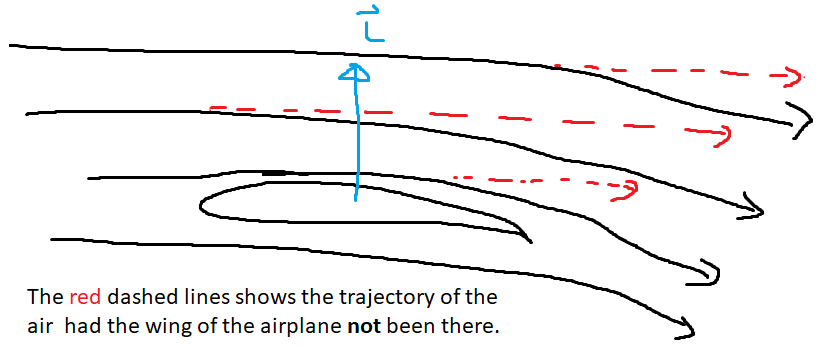

Lessons from my First Job Interview
2017 was the beginning of a new chapter for me: I just finished my undergrad, and I was looking for a job. I considered myself a good candidate as I had good grades, some research experience, and some internship experience (though not in engineering), so naturally I thought that finding a job would not take a long time.
But boy was I wrong.
I applied to multiple jobs per day each with a cover letter tailored to the specific job posting. I went to job fairs, got my CV reviewed by friends, family, other engineers, HR professionals, but I still couldn’t find a job. Then, the inevitable doubt started creeping in. Was I a fraud? Was all this work for nothing if I couldn’t land a job in my field of study? Most of the companies I sent my resumé never got back to me, and when they did, I would get messages along the line of:
“Although we were impressed by your background, we decided to move forward with other candidates which better suit our needs.”
I finally caught my lucky break when I got a tip from a friend who finished his undergrad a semester earlier than me (I did a minor in mathematics which took an additional semester to complete). Funny thing was that I applied for that exact role three weeks earlier but having a referral from the inside may have sped up the process (it probably expedited it, if anything).
Never underestimate the power of networking. Sometimes, a connection is all you need. A friend of mine told me this nugget that I kept with me. For any project to be successful, you need three ingredients:
- You need an opportunity in the large sense (a need in the market, a job posting, learning that your crush is single, etc.)
- You need to be ready. If you have an opportunity, but you are not ready for it, then what’s the point?
- Lastly, maybe for 5% of the equation, you just need a bit of luck. Sometimes, the star needs to align the just right.
So, for me, all 3 were present: there was an opportunity via a job offer, I was ready for it (I finished my degree and wanted to work), and the tip from my friend helped me get the job interview. But I still had to do well on the interview to get the job.
The position I was interviewing for was to qualify full flight simulators. Quick summary around the job I was applying for: commercial pilots train on full flight simulators which are exact replicas of the cockpit of the airplane, like the picture below
For the flight training to count, the national aviation authority of the respective country must approve the simulator. The job was to support the qualification of simulator by demonstrating the simulator objectively behaves like the airplane. For example, when performing a takeoff, the same feeling of being pushed back in the seat of the airplane is also felt in the simulator.
Leading up to the interview, I reviewed my fluid mechanics since the knowledge aerodynamics was key for this job. When the interview started, I was met with a tough looking man in his mid-thirties. After a brief introduction, he told me:
Interviewer – “I will ask you 5 technical questions, and I want to hear how you work through those problems. I want to see your reasoning, and if we can work together”, he said.
Fair. It put me at ease, as I thought it was a much better approach than the questions like “Tell me, what is your biggest weakness?”
Question 1
Interviewer – “Can you explain to me what the Bernoulli Principle is?”
This one was easy because it was part of my revision (for those curious, this video gives an intuitive explanation). So, I stated the theorem, and explained what each term meant, he asked:
Interviewer – “Are you sure?”
Anthony – “Well yes, I am quite certain, but if you want, we can just google it, and validate it together”.
Interviewer – “No, no need to. You got it right. In this job, you will be pushed and thoroughly questioned by clients. You will receive a lot of scrutiny, so you need to be sure about the claims you are making.
Question 2
I do not remember much of the second question, but I do recall that it went well, and that I’ve answered it correctly.
Question 3
Interviewer – “Ok, good. So now, please tell me how an airplane can generate lift. I forgot how it works.”
I thought for a bit, and while there are multiple ways of explaining of this phenomenon, I resorted to the Newton’s third law explanation. Although it does not offer a complete explanation of the physics, it was still a good enough explanation for the purposes of this interview (For those interested, I suggest watching this video for an in-depth explanation).
Anthony – “Well, first, to generate lift, there needs to be wind travelling relative to the wing. This is achieved when the engines generate forward thrust which causes the airplane to increase its speed. Consequently, relative winds speeds are felt at the wing. Due to the wing geometry, the stream of air is deviated downwards. Whenever the velocity of a body changes either in direction or in magnitude, then an acceleration is felt. The deviation is caused by the shape of the airplane, and since the deviation is downward, then the acceleration is downwards, so by Newton’s third law, there is a net force up, and that force is called the lift vector.”
My interviewer seemed confused by my explanation (or at least pretended to be), so I told him: “Hey, do you have a pen a paper, maybe I can draw it, and this will be clearer”. Then, I scribbled something resembling this:

Interviewer – “Ah, the picture clarified what you meant. Now I understand better. In this job, you always need to communicate clearly what is your reasoning and, so never hesitate to repeat yourself, or to draw, or find alternative explanations, because otherwise you may unwillingly cast doubt in the claim you are making. The simpler you can make the explanation, the better.”
And he was totally right, because at the end of the day, the goal of this exchange is to make sure that my interviewer understood what is lift (because he forgot, remember?), and not to reinforce my own understanding of this aerodynamic phenomenon.
Question 4
Interviewer – “Well, you seem to understand how an airplane can generate lift, but can you tell me about the flight control surfaces? For example, can you explain to me how can an airplane go climb and descent? How about banking left and right?”
Anthony – “It’s the flaps”, I said quite confidently.
Interviewer – “Well, are you sure?”
Anthony – “Hmm, well not 100% sure”.
Interviewer – “So why didn’t you start with that? Saying that you weren’t sure?”
Anthony – “Well, I didn’t want to not answer the question… it wouldn’t look too good, you know.”
Interviewer – “Sometimes the answer is ‘I don’t know’. It’s much better to say ‘I don’t know’ than to claim something you aren’t sure. Imagine if I were your colleague, and I needed this information from you, and based on this incorrect information, I start my work, and I essentially waste my time because you told me something you weren’t sure. Would you like that?”
Anthony – “Now that you put it like that, obviously not. Noted.”
Question 5
Interviewer – “Alright, for the last question, I have a thermostat, and a thermometer, how can I ensure the temperature remains constant?
Anthony – “Excuse me, I am not sure I understand the question.”
Interviewer – “What wasn’t clear?”
Anthony – “Well, in this room, can you show me where is the thermometer and thermostat? Maybe it will help me understand better what we are talking about.”
So we get up, and he starts playing with the thermostat, and shows me the different options and features. Frankly, the discussion was going in circles, mostly because I was stalling for time, and he clearly knew that. We kept going back and forth with me asking more irrelevant questions, and then I tell him:
Anthony – “Ok, just to recap: we have a thermometer and a thermostat, we want to connect them in a way such that when I open the door or a window, then the temperature in the room stays constant as much as possible, right?
Interviewer – “Yeah, it’s a good way to summarize the question.”
Anthony – “Hey, I am going to be honest with you. I don’t know. Can you tell me how you would connect them? “
Interviewer – “Good, I knew you didn’t know the answer to the question, it was immediately obvious. You showed growth from the previous question which stumped you. You’re honest, and someone I would like working with, so I’ll make you an offer! I’ll speak to HR about this. Also, I liked that you asked clarification questions. I stated the problem in an unclear manner on purpose. In this job, you need to always ask for clarifications if you aren’t 100% clear. Otherwise, you will work on what you think is required, and end up spending a lot of time solving a problem that wasn’t even in the scope of work”.
We shook hands, and I thanked him, and a few weeks later, I started my first engineering job. When I think back about my time working there, my interviewer, who later became my boss and my friend, was right about everything because every situation he described in the interview, I later encountered.
______________________________________________________________
1 – Image taken from : https://investor.textron.com/news/news-releases/press-release-details/2014/TRU-Simulation–Training-to-Provide-A320-Full-Flight-Simulator-to-Australias-Ansett-Aviation-Training/default.aspx